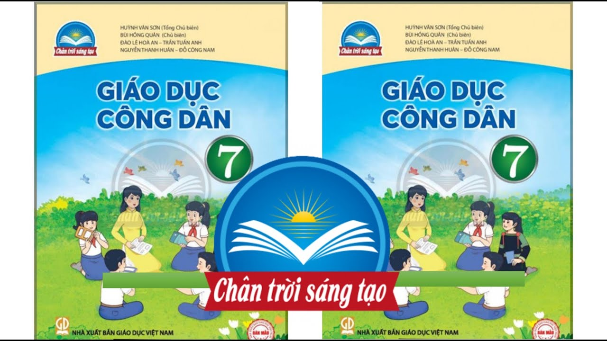

Đôi điều suy nghĩ về môn giáo dục công dân
Bởi học sinh Trần Đại Nghĩa (cóp trên mạng).

Hiện nay, với thực trạng báo động về đạo đức của
học sinh thì vô hình trung
môn Giáo dục công
dân (GDCD) trong nhà trường trở thành tâm điểm chú ý của dư luận.
Nhiều người đặt câu hỏi rằng: Tại sao môn học này chưa thực sự phát huy hiệu quả
là giáo dục
học sinh thành người tốt, người có đạo đức, có ích cho xã hội ?
Theo phân phối chương trình, thời lượng của môn GDCD chỉ 1 tiết/tuần, mà lượng kiến
thức lại
khá nhiều, nội dung một số bài thì na ná giống nhau, lại hơi khó hiểu, chủ yếu là kiến thức
hàn lâm nên tạo cho học sinh tâm lý chây lười, không kích thích được sự ham học ở các em. Bên
cạnh đó, so với các môn khác thì môn GDCD rất ít tài liệu tham khảo, thiếu tranh ảnh, sơ đồ,
bảng biểu trực quan minh họa cho bài học. Tuy giáo viên có tự làm đồ dùng dạy học theo khả
năng có thể nhưng tính khả thi và hiệu quả chưa cao.
Mặt khác, từ lâu, môn GDCD bị phụ huynh lẫn học sinh xem là môn phụ, ít được quan tâm
vì không
nằm trong những môn sẽ thi tốt nghiệp hay đại học, cao đẳng vì thế hệ lụy tất yếu là nhận
thức tư tưởng, đạo đức, hành vi, lối sống của một bộ phận không nhỏ học sinh ngày càng xuống
cấp, thậm chí vi phạm pháp luật có chiều hướng gia tăng.
Theo Quy chế đánh giá xếp loại học sinh THCS và học sinh THPT ban hành kèm theo Thông tư
58/2011/TT-BGDĐT
ngày 12/12/2011 của Bộ trưởng Bộ GD- ĐT thì trong việc đánh giá hạnh kiểm và học lực học sinh đã được nêu
rõ: Việc đánh giá, xếp loại hạnh kiểm học sinh phải căn cứ vào kết quả nhận xét đánh giá thái độ hành vi của
học sinh đối với nội dung môn GDCD. Quy chế được ban hành như một luồng gió mát thổi vào tâm trí và lương
tri của nhiều nhà giáo đã và đang dạy môn GDCD. Vì thế, trọng trách và vị thế của môn GDCD trong nhà trường
được nâng lên một tầm cao mới.
Tuy nhiên, cũng chính điều này gây không ít khó khăn cho giáo viên giảng dạy môn GDCD,
vì ngoài
việc giảng dạy thì giáo viên phải đảm nhiệm công việc hết sức quan trọng là “đánh giá bằng nhận
xét sự tiến bộ về thái độ, hành vi trong việc rèn luyện đạo đức, lối sống của học sinh theo nội dung môn
GDCD quy định trong chương trình giáo dục phổ thông cấp THCS và THPT do Bộ trưởng Bộ GD- ĐT ban hành trong
mỗi học kỳ và cả năm học”, đồng thời kết quả đó được chính “giáo viên môn GDCD ghi trong học bạ”, thử hỏi
một giáo viên dạy GDCD có khi còn kiêm nhiệm công tác khác, dạy khoảng 10 lớp hoặc có thể nhiều
hơn, thì nhân lên cũng sẽ thấy số lượng học sinh phải đánh giá là quá lớn, nhiều khi không thể nhớ hết
tên học sinh nữa, thử hỏi việc đánh giá nhận xét, ghi vào học bạ của học sinh liệu có kham nổi?
Thiển nghĩ, để giúp giáo viên làm tốt công tác giảng dạy môn GDCD và học sinh được học
chương trình
môn GDCD có hiệu quả thì trước hết chúng ta phải có đội ngũ nhà giáo yêu nghề, tâm huyết, say sưa với nghề
mà mình đã chọn lựa đồng thời tạo điều kiện thuận lợi cho đội ngũ giáo viên giảng dạy môn GDCD phấn đấu
cống hiến cho trường, cho ngành. Bên cạnh đó, mỗi giáo viên giảng dạy bộ môn này cũng phải trau dồi chuyên
môn nghiệp vụ sư phạm, tăng cường tích lũy chuyên môn để đáp ứng yêu cầu ngày càng cao của ngành giao phó,
để “mỗi thầy giáo, cô giáo thật sự trở thành tấm gương đạo đức tự học và sáng tạo” cho học sinh noi theo.
Hơn thế, về phía gia đình thì phụ huynh học sinh cũng cần nhận thức được vai trò, vị trí và tầm quan
trọng của bộ môn GDCD, từ đó định hướng con em mình quan tâm môn học theo chiều hướng tích cực, tự học
“học để biết, học để làm, học để chung sống và học để làm người”. Có như thế thì môn GDCD mới có thể
phát huy tối đa hiệu quả nhiệm vụ “dạy người” mà môn học này gánh vác trong nhà
trường.
Những năm qua, cùng với các môn học khác, nội dung và chương trình sách giáo khoa môn GDCD được
cải cách. Về
nội dung, chương trình SGK mới cũng được đổi mới phong phú, đa dạng, hợp lí, khoa học và lôi cuốn học sinh
hơn. Chương trình mới bao gồm một số nội dung lớn như: Khái quát về Triết học Mác - Lê nin, Kinh tế chính
trị Mác - Lê nin, Đạo đức học, Chính sách kinh tế, văn hóa, xã hội, pháp luật. Ngoài ra còn lồng ghép một số
nội dung khác có liên quan thông qua các hoạt động giáo dục ngoài giờ lên lớp như giáo dục môi trường, giáo
dục sức khỏe sinh sản vị thành niên, giáo dục an toàn giao thông, giáo dục kĩ năng sống… đã góp phần làm cho
môn học trở nên hấp dẫn hơn với học sinh
Đa số giáo viên giảng dạy môn học này là giáo viên kiêm nhiệm - vừa dạy lịch sử, vừa dạy GDCD.
Nhưng năm gần
đây, thực hiện chủ trương của ngành giáo dục: Giáo viên không được dạy kiêm nhiệm nên việc đầu tư cho chuyên
môn cũng như chất lượng giảng dạy được nâng cao rõ rệt.
Trước đây tư liệu, đồ dùng dạy học của môn học hầu như không có gì. Nhưng hiện nay cùng với sự
phổ biến của
các phương tiện thông tin đại chúng, sự trợ giúp đắc lực của các phương tiện hiện đại; đặc biệt là máy chiếu
đã làm cho giờ học GDCD thêm sôi động và hấp dẫn.
Một bộ phận học sinh vẫn còn thờ ơ với môn học, có tư tưởng học lệch, chỉ tập trung học các môn
thi đại học
và tốt nghiệp mà chỉ dành rất ít thời gian, hoặc chỉ học đối phó môn học này. Tuy nhiên, cùng với việc cải
cách nội dung cộng với lòng nhiệt tình, tâm huyết của giáo viên, thêm vào đó là sự trợ giúp của các phương
tiện dạy học hiện đại đã góp phần không nhỏ vào ý thức của học sinh đối với môn học này. Biểu hiện cụ thể là
chất lượng giảng dạy của môn học ngày càng được nâng cao.
Với một số luận cứ về cơ sở lí luận và thực tiễn như trên, cùng với sự quan tâm của các cấp lãnh
đạo, sự tâm
huyết của giáo viên bộ môn cũng như sự nhìn nhận đúng đắn của học sinh hy vọng rằng môn GDCD ngày càng được
quan tâm hơn để xứng đáng với vai trò và vị trí của nó “Giáo dục công dân -Giáo dục con người”.